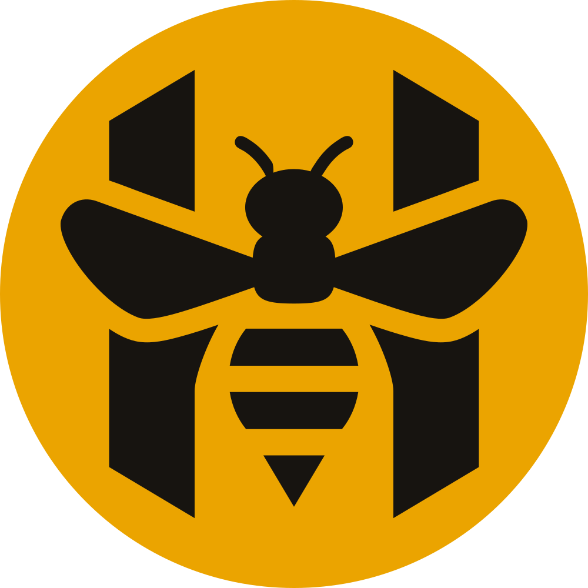
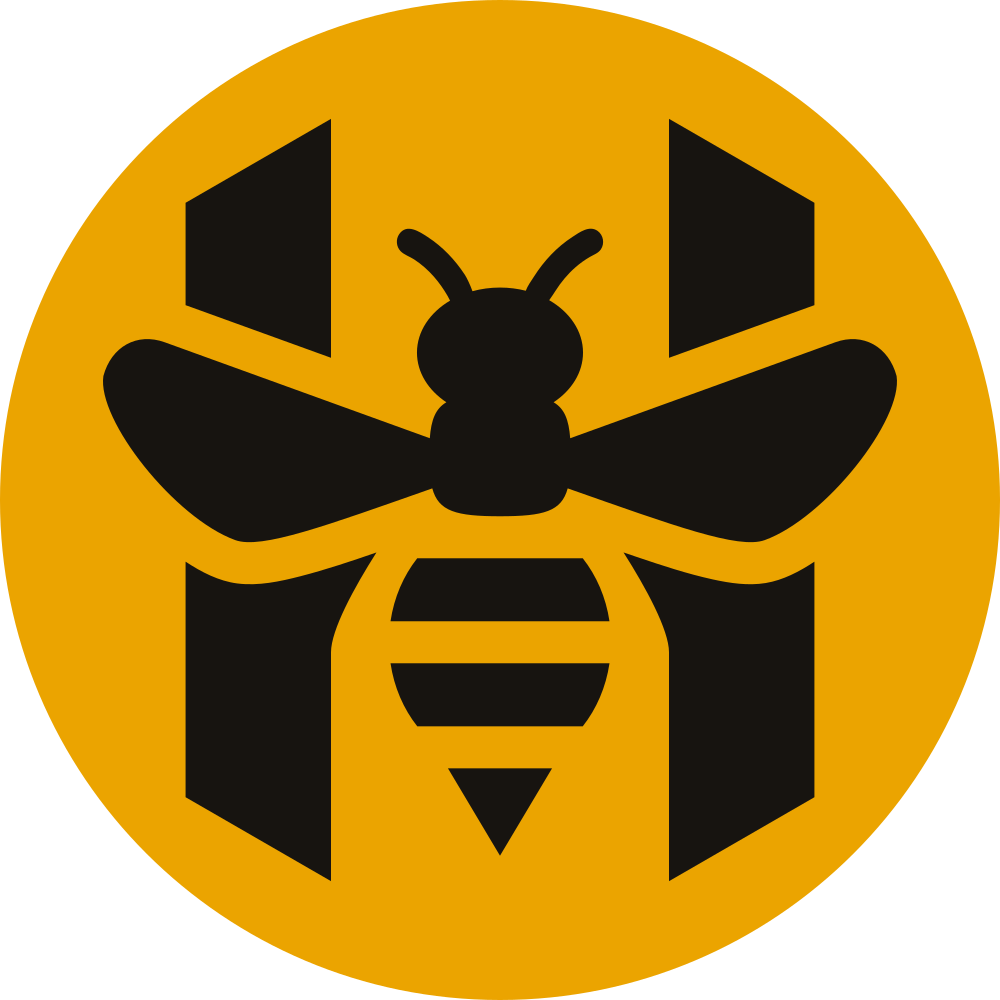
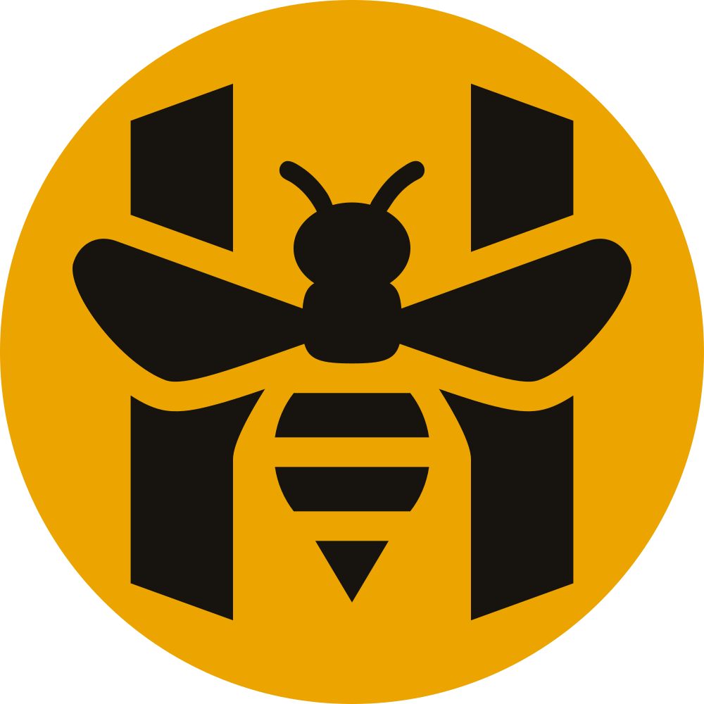
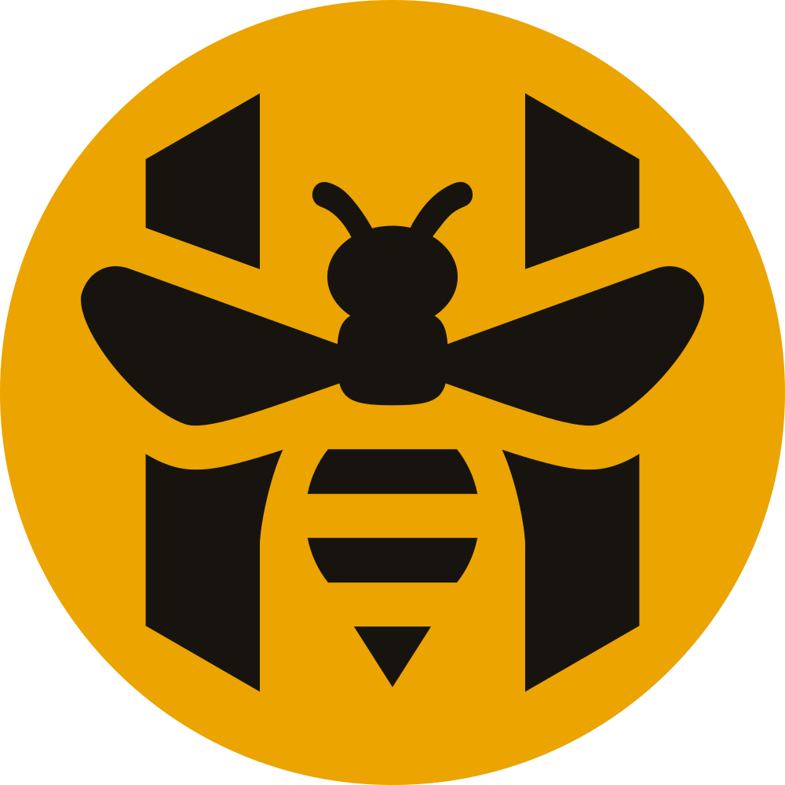

W0 · Hiện tại (ChatGPT)
Rất đậm, khe trong chữ E gần bít; giống một font đậm phổ thông — hai điểm bạn chưa ưng.
Hai việc: bốn bản mark để chọn (bản hiện tại và ba mức tinh chỉnh), và bốn hướng wordmark mới. Theo góp ý của bạn, wordmark nào cũng nhẹ hơn bản ChatGPT và có tính cách riêng thay vì giống một font đậm phổ thông. Hai màu giữ nguyên: mật ong #EBA400 và đen #171410.
Cùng một ý, cùng một cách dựng; khác nhau ở độ dày khe, độ đậm râu và góc vát. Hàng thứ ba là 16 và 32 px thật phóng to từng điểm ảnh — chỗ các bản khác nhau rõ nhất.
Bản vẽ lại đã có: nguyên hình ChatGPT, nắn tròn, đối xứng.

Để ý: râu tan đầu tiên khi thu nhỏ.
Giữ nguyên hình, sửa phần kỹ thuật.

Đổi lại: nhìn lướt gần như không khác M0; giá trị nằm ở file gốc sạch và in ấn.
Như M1, và cả hình chỉ còn một góc nghiêng.

Đổi lại: mất dáng nhọn như vương miện ở đỉnh thân H; chữ H vuông vức, điềm hơn.
Như M1, mở rộng mọi khe để còn đọc được khi thu nhỏ.

Đổi lại: ở cỡ lớn mảnh thân H phía trên nhỏ đi, hình thoáng hơn, bớt đặc so với bản gốc.
Đề xuất: M1 làm mark chính, M3 làm bản cho cỡ nhỏ. M1 giữ đúng hình bạn đã ưng và sửa phần kỹ thuật; M3 chỉ dùng khi mark nhỏ hơn 32 px (favicon, icon tab) — cách các thương hiệu lớn làm với logo nhiều chi tiết.
Mỗi hướng đứng trong lockup với mark M1, trên sàn sáng, trên vải đen và trên thanh điều hướng điện thoại ở cỡ thật. ".05" luôn là số của Số đang mở, màu mật ong. Hàng đầu là bản hiện tại để so.
Rất đậm, khe trong chữ E gần bít; giống một font đậm phổ thông — hai điểm bạn chưa ưng.
Cùng họ chữ với tiêu đề và số bìa của app, ở độ đậm 500 thay vì 800. Chữ rộng, bo vuông, có nét riêng ở V và E; ".05" cùng họ nên HIVE.05 trên logo khớp hệt số trên bìa Số.
Đổi lại: chữ rộng nên lockup dài hơn; cá tính vừa phải.
Chữ dựng riêng cho HIVE: một nét đều, đầu tròn, và mọi chỗ nối hình chữ T chừa một khe nhỏ — thanh ngang chữ H và tay giữa chữ E không chạm thân, đúng cách con ong cắt qua chữ H trên mark. Nhẹ, mềm, không font có sẵn nào có.
Đổi lại: mềm hơn phần còn lại của app vốn góc cạnh; phải vẽ đủ mười chữ số theo cùng luật cho số của Số.
Chữ đứng cao kiểu biển hiệu, có khe như chữ phun sơn qua khuôn — khe gợi lại khe mật ong khoét trên mark. Hẹp nên gọn trên thanh điều hướng điện thoại.
Đổi lại: khe cắt làm chữ bụi và công nghiệp hơn; ở cỡ rất nhỏ khe có thể mất.
Bodoni: nét thanh nét đậm như nhãn nhà mốt. Đặt cạnh mark đậm cho tương phản mạnh nhất, và xa mọi font "mặc định" nhất.
Đổi lại: xa chất streetwear nhất; nét thanh mảnh ở cỡ nhỏ trên nền tối.
Đề xuất: W2 Nét rời. Nó sửa đúng hai điểm bạn chưa ưng — nhẹ hẳn và không thể nhầm với font có sẵn — và khe ở chỗ nối nói cùng một ngôn ngữ với khe mật ong trên mark. Nếu muốn an toàn và đồng bộ với app, W1.
Trả lời một dòng, ví dụ M1 + M3 nhỏ, W2. Tôi dựng bản vector sạch cho lựa chọn (wordmark ra đường nét, không phụ thuộc font), bộ PNG, rồi mới tính việc đưa vào app. Chưa có gì trong app thay đổi.